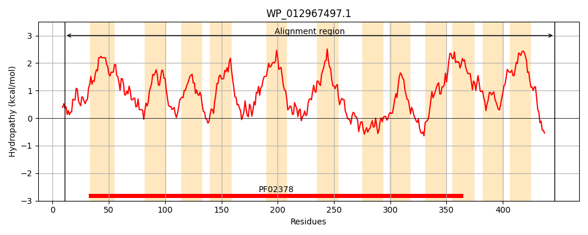
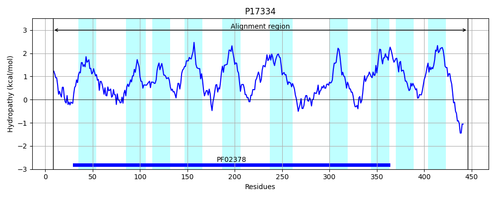
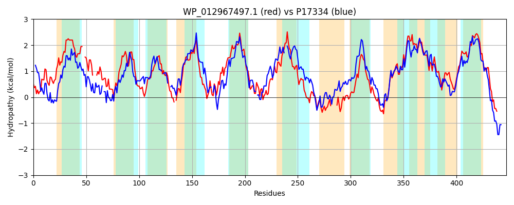

Hit Accession: P17334
Hit TCID: 4.A.3.2.1
Hit Description: gnl|BL_ORD_ID|9246 gnl|TC-DB|P17334|4.A.3.2.1 PTS SYSTEM, CELLOBIOSE-SPECIFIC IIC COMPONENT (EIIC-CEL) (CELLOBIOSE- PERMEASE IIC COMPONENT) (PHOSPHOTRANSFERASE ENZYME II, C COMPONENT) - Escherichia coli.
Mach Len: 447
e:0.000000
Query TMS Count : 12
Hit TMS Count: 10
TMS-Overlap Score: 7.950000
Predicted Substrates:CHEBI:50668;N-acetyl-beta-D-glucosaminyl-(1->4)-N-acetyl-aldehydo-D-glucosamine, CHEBI:3522;cellobiose
BLAST Alignment:
Score: 684 , Bit scores: 268 bits, E-value: 3.1e-85, Alignment length: 447, Percentage identity: 37
Query: 11 MEKILVPVAIKLNSQIHVSAIRDAFILSFPIVMASSLIILINFAILS--PDGFIASI---LHLGTIFPHLAEAQQIFTPVMNGSVNIMAILITFLVARNMAISYQQDDLLCGLTAIGAFFVVYTPYTIIDGQAY-LATKYLGPQGLFVAIIVALISSEVFCRLARNPRVTITMPAAVPPAVARSFKVLLPIFFVMIFFSILNYLLTRISPNGLNDLIYTLIQAPLKDMGTNIVTVLVLGLVANFLWVLGIHGPNTVAAIRETIFSEANLENLSYAASHGSTW-----GAPYPITWTGINDAFANCGGSGMTLGLLLAIFIASRRKDYRDLAKMAFVPGLFNINEPVMFGLPIVLNPILVIPFILVPFVNSLIGYFFISMEFIPPIAYAVPWTTPGPLIAFFGTGGNWLALFVGILCLAVSTLIYLPFVIAANKVNTAAATDQEDGDV 446
+EK+L+P A+K+ Q HV+AI++ FI P+ +A ++ +LIN LS F S+ L TI L + I V NG++ IM+++ F + +A + D L GL ++ AF V TPY++ G+AY + +LG + II+ L+ +E+F + R V I +P +VP +V+RSF L+P F ++ I+ + L N + +I I PL +G+ + V+ LW GIHG + A+ I + LEN++ +GS G + I + D+F GGSG TLGL+LAIFIASRR DYR +AK+A G+F INEP++FGLPI++NP++ IPF+LV + + I M IPP+ PWT P L AFF T G+ AL V + L ++TLIYLPFV+ ANK A ++ + D+
Sbjct: 8 LEKVLLPFAVKIGKQPHVNAIKNGFIRLMPLTLAGAMFVLINNVFLSFGEGSFFYSLGIRLDASTI-ETLNGLKGIGGNVYNGTLGIMSLMAPFFIGMALAEERKVDALAAGLLSVAAFMTV-TPYSV--GEAYAVGANWLGGANIISGIIIGLVVAEMFTFIVRRNWV-IKLPDSVPASVSRSFSALIPGFIILSVMGIIAWALNTWGTN-FHQIIMDTISTPLASLGSVVGWAYVI--FVPLLWFFGIHGALALTALDNGIMTPWALENIATYQQYGSVEAALAAGKTFHIWAKPMLDSFIFLGGSGATLGLILAIFIASRRADYRQVAKLALPSGIFQINEPILFGLPIIMNPVMFIPFVLVQPILAAITLAAYYMGIIPPVTNIAPWTMPTGLGAFFNTNGSVAALLVALFNLGIATLIYLPFVVVANKAQNAIDKEESEEDI 446 | Protein Hydropathy Plots: |
|---|
|  |  |
Pairwise Alignment-Hydropathy Plot:
|
|---|
|  |